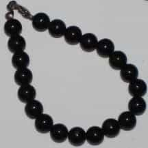
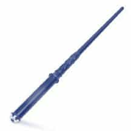
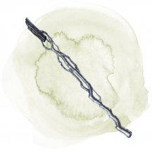
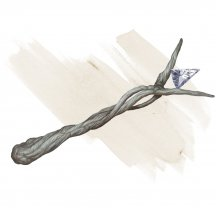
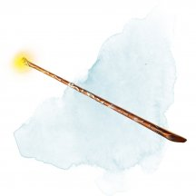
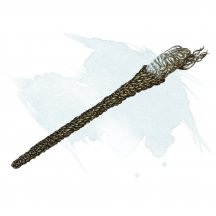
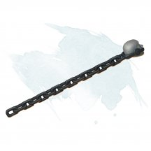

- Чудесный предмет, редкий (требуется настройка волшебником)
- Рекомендованная стоимость: 501-5 000 зм
В этот испачканный тяжёлый том въелись едкие запахи. Металлическое обрамление обложки отлито из меди, железа, свинца, серебра и золота, застывших в ходе трансмутации одного металла в другой. Найденная книга содержит следующие заклинания: газообразная форма [gaseous form], магическое оружие [magic weapon], окаменение [flesh to stone], падение пёрышком [feather fall], превращение [polymorph] и увеличение/уменьшение [enlarge/reduce]. Эта книга функционирует для вас как книга заклинаний.
Когда вы держите книгу, вы можете использовать её в качестве заклинательной фокусировки для ваших заклинаний волшебника.
Книга имеет 3 заряда и ежедневно восстанавливает 1к3 заряда на рассвете. Вы можете использовать заряды следующими способами, пока держите книгу:
- Если вы потратите 1 минуту на изучение книги, вы можете израсходовать 1 заряд и заменить одно из своих подготовленных заклинаний волшебника на другое заклинание из книги. Новое заклинание должно принадлежать школе Преобразования.
- Действием вы можете коснуться немагического предмета, который никто не несёт и не носит, и потратить некоторое количество зарядов, чтобы превратить его в другой предмет. При расходовании 1 заряда каждое из измерений предмета не должно превышать 1 фут; вы можете потратить дополнительные заряды, чтобы увеличить максимальные размеры на 2 фута за каждый последующий заряд. Стоимость нового предмета в золоте не может быть больше, чем стоимость оригинала.
Магические предметы
- Чудесный предмет, редкий (требуется настройка)
- Рекомендованная стоимость: 501-5 000 зм
Пока вы носите этот амулет из серебра и бирюзы, вы получаете преимущество на спасброски против эффектов изгоняющих нежить.
Если вы провалили спасбросок от этого эффекта, то вы можете мгновенно потратить один заряд и получить успех. Вы можете сделать так три раза, все израсходованные заряды восстанавливаются на рассвете.
- Чудесный предмет, редкий (требуется настройка)
- Рекомендованная стоимость: 501-5 000 зм
Пока вы носите этот амулет, ваше значение Телосложения равно 19. Если ваше Телосложение без него уже 19 или выше, то амулет не оказывает на вас никакого действия.
- Чудесный предмет, редкий (требуется настройка)
- Рекомендованная стоимость: 501-5 000 зм
Этот амулет размером с кулак сделан из пучка сухих стеблей растений, обернутых серебряной нитью. Подвешенный на кожаном ремешке, он обычно носится на шее или прикрепляется к поясу.
Амулет имеет 3 заряда. Пока вы носите амулет, вы можете действием потратить 1 заряд, чтобы наложить заклинание разговор с растениям [speak with plants]. Пока заклинание действует, вы также получаете преимущество на проверки Харизмы, чтобы влиять на поведение, манеры и отношение растений. Амулет восстанавливает все израсходованные заряды на рассвете каждого дня.
- Чудесный предмет, редкий (требуется настройка Гуманоидом)
- Рекомендованная стоимость: 501-5 000 зм
Амулет представляет собой диск шириной 4 дюйма, сделанный из дерева в серебряной оправе, с руной, вырезанной на его лицевой стороне. Заклинание обнаружение магии [detect magic] обнаруживает магическую ауру школы Очарования вокруг амулета.
Для каждого щитостража [shield guardian] есть амулет, с которым он магическим образом связан. Такой амулет всегда только один, и если он будет уничтожен, щитостраж станет недееспособным, пока амулет не будет заменен на исправный.
Амулет щитостража является самостоятельной целью для атаки, если его никто не несет и не носит. КД амулета 10, у него 10 хитов, и он имеет иммунитет к урону психической энергией и ядом. Создание нового амулета занимает одну неделю и стоит 1000 зм за компоненты.
Главная задача щитостража - защищать носителя амулета. Владелец амулета может приказывать щитостражу атаковать противников или защищать себя от атак. Если носитель амулета находится в опасности, то конструкт поглотит часть урона, даже на некотором расстоянии.
Гуманоид, настроенный на этот амулет, знает расстояние и направление движения щитостража, при условии, что амулет и владелец находятся на одном плане существования. Действием, владелец настроенного амулета может попытаться повторно активировать щитостража, совершив это при успешной проверке Интеллекта (Магия) Сл 20. Повторная активация может быть совершена только тогда, когда амулет и щитостраж находятся в пределах 10 футов друг от друга.
- Оружие (любой арбалет), редкое (требуется настройка)
- Рекомендованная стоимость: 501-5 000 зм
Этот арбалет изготовлен из почерневшего дерева, а его плечи украшены перламутровыми вставками с изображением созвездий. Вы игнорируете свойство перезарядка данного арбалета. Если вы не заряжаете оружие боеприпасами, оно создаёт свои собственные, автоматически создавая один магический боеприпас, когда вы совершаете им дальнобойную атаку. Боеприпасы, создаваемые оружием, исчезают в тот момент, когда они попадают в цель или промахивается мимо неё. Арбалет имеет 3 заряда и восстанавливает 1к3 израсходованных зарядов ежедневно на рассвете.
Созвездия. Арбалет украшен тремя созвездиями. Бонусным действием вы можете нажать на одно из созвездий, чтобы активировать его, расходуя 1 заряд и создавая один из следующих эффектов:
- Баланс. В следующий раз, когда вы попадаете по существу броском дальнобойной атаки, совершённой с помощью этого арбалета, до конца вашего следующего хода, вы или другое существо по вашему выбору, находящееся в пределах 30 футов от вас можете восстановить количество хитов, равное 1к8 плюс ваш бонус мастерства.
- Пламя. До конца вашего следующего хода, когда вы попадаете по существу броском дальнобойной атаки, совершённой с помощью этого арбалета, атака дополнительно наносит 2к8 урона огнём.
- Плут. До конца вашего следующего хода вы становитесь невидимым, и все, что вы носите или несёте, также становится невидимым.
- Чудесный предмет, редкий (требуется настройка волшебником)
- Рекомендованная стоимость: 501-5 000 зм
Этот латунный диск из сочленённых концентрических колец разворачивается в армиллярную сферу. Бонусным действием вы можете развернуть диск в сферу или свернуть её обратно в диск. Найденный архив содержит следующие заклинания, которые являются для вас заклинаниями волшебника, пока вы настроены на него: гадание [augury], поиск предмета [locate object], поиск пути [find the path], поиск существа [locate creature], предвидение [foresight] и предсказание [divination]. Он функционирует для вас как книга заклинаний, с заклинаниями, закодированными на кольцах.
Пока вы держите архив, вы можете использовать его в качестве заклинательной фокусировки для ваших заклинаний волшебника.
Архив имеет 3 заряда и ежедневно восстанавливает 1к3 заряда на рассвете. Вы можете использовать заряды следующими способами, пока держите архив:
- Если вы потратите 1 минуту на изучение архива, вы можете израсходовать 1 заряд, чтобы заменить одно из своих подготовленных заклинаний волшебника на другое заклинание из архива. Новое заклинание должно принадлежать школе Прорицания.
- Когда существо, которое вы можете видеть в пределах 30 футов, совершает бросок атаки, проверку характеристики или спасбросок, вы можете реакцией, израсходовав 1 заряд, заставить существо бросить к4 и добавить результат, в качестве бонуса или штрафа (по вашему выбору), к исходному броску. Вы можете сделать это после того, как увидите результат броска, но до того, как эффекты броска вступят в силу.
- Чудесный предмет, редкий (требуется настройка чародеем)
- Рекомендованная стоимость: 501-5 000 зм
Этот кристалл — затвердевший осколок Астрального плана, окутанный серебристым туманом. Действием вы можете прикрепить осколок к Крошечному предмету (например, оружию или ювелирному изделию) или отсоединить его. Он отпадает самостоятельно, если ваша настройка на него заканчивается. Вы можете использовать осколок в качестве заклинательной фокусировки, пока вы несёте или носите его.
Когда вы используете метамагию для накладывания заклинания, пока несёте или носите осколок, сразу же после накладывания заклинания вы можете телепортироваться в свободное пространство, которое можете видеть в пределах 30 футов.
- Чудесный предмет, редкий (требуется настройка волшебником)
- Рекомендованная стоимость: 501-5 000 зм
Эта толстая книга имеет тёмный кожаный переплёт, инкрустированный пересекающимися серебряными линиями, напоминающими карту или схему. Найденная книга содержит следующие заклинания, которые являются для вас заклинаниями волшебника, пока вы настроены на неё: врата [gate], круг телепортации [teleportation circle], магические врата [arcane gate], переносящая дверь [dimension door], слово возврата [word of recall], туманный шаг [misty step] и уход в иной мир [plane shift]. Эта книга функционирует для вас как книга заклинаний.
Когда вы держите книгу, вы можете использовать её в качестве заклинательной фокусировки для ваших заклинаний волшебника.
Книга имеет 3 заряда и ежедневно восстанавливает 1к3 заряда на рассвете. Вы можете использовать заряды следующими способами, пока держите книгу:
- Если вы потратите 1 минуту на изучение книги, вы можете израсходовать 1 заряд и заменить одно из своих подготовленных заклинаний волшебника на другое заклинание из книги. Новое заклинание должно принадлежать школе Вызова.
- Когда по вам попадают атакой, вы можете реакцией израсходовать 1 заряд, чтобы телепортироваться в свободное пространство, которое вы можете видеть в пределах 10 футов. Если ваша новая позиция находится вне досягаемости атаки, она промахивается по вам.
- Оружие (булава), редкое (требуется настройка)
- Рекомендованная стоимость: 501-5 000 зм
Бедренная кость святой Марковии обладает свойствами булавы распада [mace of disruption]. Если ею будут нанесёны один или несколько ударов по вампиру [vampire] или порождению вампира [vampire spawn] во время одной битвы, бедренная кость рассыпается в прах, как только битва подходит к концу.
В юности Марковия, последовав зову сердца, стала священницей Утреннего бога вскоре после своего восемнадцатилетия. Она показала себя харизматичной проповедницей и к тридцати годам обладала репутацией той, перед которой не устоять никакому злу.
Марковия долгое время считала Страда безумным тираном, но лишь после его обращения в вампира решилась выступить против него. Когда она уже собрала своих последователей и приготовилась выступить в поход на замок Равенлофт, Страд отправил группу порождений вампира к ней в аббатство. Они выступили против Марковии и были уничтожены все до единого.
Праведная победа зажгла её уверенность, и Марковия направилась в замок Равенлофт. Великая битва бушевала от катакомб до парапетов. В итоге Марковия так и не вернулась в Баровию, а Страд долгое время хромал, скалясь от боли. Говорят, что он запер Марковию в крипте под замком, и её останки лежат там и по сей день.
Хотя её тело истлело, частичка святости Марковии перешла в её кости. Уцелевшая бедренная кость наделена силой наносить Нежити ужасающие ранения.
- Чудесный предмет, редкий
- Рекомендованная стоимость: 501-5 000 зм
На этом латунном роге выгравирована руна «Война», которая светится фиолетовым, когда трубят в рог.
Бонусным действием вы можете протрубить в рог. Когда вы это делаете, если вы испуганы, вы немедленно оканчиваете это состояние на себе. Вы также совершаете с преимуществом спасброски от испуга до начала своего следующего хода.
Пробуждение руны. Когда вы трубите в рог, вы также можете пробудить руну, наполняя глубокий зов рога защитной магией, воздействующей на существ по вашему выбору в пределах 30 футов от вас. Вы и все затронутые существа получаете бонус +1 к КД до начала вашего следующего хода.
После того, как руна была пробуждена, она не может быть пробуждена снова до следующего рассвета.
- Оружие (булава), редкое
- Рекомендованная стоимость: 501-5 000 зм
Вы получаете бонус +1 к броскам атаки и урона, совершённым этим магическим оружием. Бонус увеличивается до +3, если атакуется Конструкт.
Если у вас выпадает «20» при броске атаки этим оружием, цель получает дополнительный дробящий урон 7 или дополнительный дробящий урон 14, если это был конструкт. Если у конструкта осталось 25 или меньше хитов после получения этого урона, он уничтожается.
- Оружие (булава), редкое (требуется настройка)
- Рекомендованная стоимость: 501-5 000 зм
Если вы попадаете этим магическим оружием по Исчадию или Нежити, это существо получает дополнительные 2к6 урона излучением. Если у цели после получения этого урона 25 или меньше хитов, она должна преуспеть в спасброске Мудрости Сл 15, иначе будет уничтожена. При успешном спасброске существо становится испуганным вами до конца вашего следующего хода.
Пока вы держите это оружие, оно излучает яркий свет в радиусе 20 футов и тусклый свет в радиусе ещё 20 футов.
- Оружие (булава), редкое (требуется настройка)
- Рекомендованная стоимость: 501-5 000 зм
У этого оружия есть 3 заряда. Если вы его держите, вы можете действием потратить 1 заряд, чтобы испустить волну ужаса. Все существа на ваш выбор в пределах 30 футов должны преуспеть в спасброске Мудрости Сл 15, иначе станут испуганными вами на 1 минуту. Будучи испуганным таким способом, существо должно тратить ходы на то, чтобы переместиться как можно дальше от вас, и не может добровольно перемещаться в пространство в пределах 30 футов от вас. Оно также не может совершать реакции. Из всех своих действий существо может использовать только Рывок или пытаться освободиться от эффекта, препятствующего его передвижению. Если двигаться некуда, существо может использовать действие Уклонение. В конце каждого своего хода существо может повторять спасбросок, оканчивая эффект при успехе.
Булава ежедневно восстанавливает 1к3 заряда на рассвете.

- Чудесный предмет, редкий
- Рекомендованная стоимость: 251-2 500 зм
Это маленький чёрный шарик 3/4 дюйма в диаметре и весом в одну унцию. Как правило, 1к4 + 4 бусин силы находят вместе.
Вы можете действием бросить бусину на расстояние до 60 футов. Бусина взрывается при ударе и уничтожается. Все существа, находящиеся в пределах 10 футов от места приземления бусины, должны преуспеть в спасброске Ловкости Сл 15, иначе получат урон силовым полем 5к4. После этого на этой площади образуется прозрачная сфера из силового поля, остающаяся на этом месте в течение 1 минуты. Все существа, провалившие спасбросок и полностью находящиеся в пределах этой площади, оказываются запертыми внутри сферы. Существа, преуспевшие в спасброске, или находящиеся в этой сфере лишь частично, выталкиваются прочь от центра сферы, пока полностью не окажутся за пределами действия силового поля. Никакие атаки и эффекты не могут проникать сквозь сферу — только воздух, пригодный для дыхания.
Запертое внутри существо может действием толкать сферу, перемещая её со своей уменьшенной вдвое скоростью. Сферу можно легко поднять, так как вне зависимости от веса существ, находящихся в ней, она весит всего 1 фунт.
- Чудесный предмет, редкий (требуется настройка)
- Рекомендованная стоимость: 501-5 000 зм
Эти металлические узелки были созданы в ответ на использование ядовитых газов на полях сражений Последней войны. Когда вы настраиваетесь на эти легкие, они заменяют легкие в вашей груди, которые исчезают. Вентилируемые легкие позволяют вам нормально дышать, даже в антимагическом поле, и их дыхательная функция не может быть подавлена магией. Вне антимагического поля или любых других эффектов, подавляющих магию, эти легкие позволяют вам нормально дышать в любой среде (включая вакуум), и вы получаете преимущество на спасброски совершаемые против опасных газов, таких как те, которые создаются заклинаниями облако смерти [cloudkill], зловонное облако [stinking cloud], вдыхаемыми ядами и газового оружия дыхания.
Действием вы можете использовать эти легкие, чтобы выдохнуть порыв ветра, как если бы вы наложили заклинание порыв ветра [gust of wind] (Сл спасброска 15) без затрат материальных компонентов. Это свойство легких не может быть использовано снова до следующего рассвета.
Если ваша настройка на вентилируемые легкие заканчивается, ваши первоначальные легкие появляются вновь.
- Чудесный предмет, редкий
- Рекомендованная стоимость: 501-5 000 зм
Это 30-футовая верёвка, весящая 3 фунта. Если вы держите один конец верёвки и действием произносите командное слово, другой конец устремляется вперёд, чтобы обмотаться вокруг существа, которое вы видите в пределах 20 футов. Цель должна преуспеть в спасброске Ловкости Сл 15, иначе она станет опутанной.
Вы можете отпустить существо, произнеся бонусным действием второе командное слово. Цель, опутанная верёвкой, может действием совершать проверку Силы или Ловкости (на свой выбор) Сл 15. При успехе существо перестаёт быть опутанным верёвкой.
У верёвки КД 20 и 20 хитов. Она восстанавливает 1 хит каждые 5 минут, если у неё есть хотя бы 1 хит. Если хиты верёвки опускаются до 0, она уничтожается.
- Чудесный предмет, редкий (требуется настройка друидом или колдуном)
- Рекомендованная стоимость: 501-5 000 зм
Этот серебряный предмет имеет форму ветви с расположенными на ней маленькими золотыми колокольчиками. Пока вы держите ветвь, она служит заклинательной фокусировкой для ваших заклинаний.
Ветвь имеет 3 заряда и ежедневно восстанавливает 1к3 заряда на рассвете. Вы можете использовать заряды следующими способами, пока держите ветвь:
- Бонусным действием вы можете потратить 1 заряд, чтобы обнаружить присутствие Аберраций, Исчадий, Конструктов, Небожителей, Нежити, Фей или Элементалей в пределах 60 футов от вас. Если такие существа присутствуют и не имеют полного укрытия от вас, колокольчики мягко звенят, их тон указывает на вид присутствующих существ.
- Вы можете действием потратить 1 заряд, чтобы наложить заклинание защита от зла и добра [protection from evil and good].
- Волшебная палочка, редкая (требуется настройка)
- Рекомендованная стоимость: 501-5 000 зм
Эта тонкая, чёрная, изготовленная темными эльфами палочка имеет 7 зарядов. Держа её, вы можете потратить действие на то, чтобы использовать 1 её заряд, и тогда из её наконечника образуется маленький шар липкого вещества и устремится к существу, находящемуся на расстоянии до 60 футов от вас. Совершите бросок атаки дальнего боя против цели, её модификатор равен вашему модификатору заклинательной характеристики (или вашему модификатору Интеллекта, если у вас нет заклинательной характеристики) плюс бонус мастерства. При попадании шар обволакивает цель и высыхает на ней, что делает цель опутанной на 1 час. Затем вязкое вещество ломается и рассыпается.
Пинта алкоголя полностью разрушает шар, и этот же эффект последует при применении масла эфирности [oil of etherealness] или универсального растворителя [universal solvent]. Шар также мгновенно разрушается, если попадает под солнечный свет. Разрушить этот вязкий материал любым другим немагическим способом невозможно, пока он не распадется сам собой.
Палочка восстанавливает 1к6+1 израсходованных зарядов ежедневно в полночь. Если вы истратили последний заряд палочки, совершите бросок к20. При результате 1, палочка будет навсегда уничтожена и превращается в безвредную слизь. Палочка вязких шаров уничтожается спустя 1 час непрерывного нахождения на солнечном свете.

- Волшебная палочка, редкая (требуется настройка)
- Рекомендованная стоимость: 501-5 000 зм
Волшебная палочка выглядит и на ощупь как сосулька.
У палочки есть 7 зарядов, которые можно использовать, чтобы творить заклинания с её помощью. С палочкой в руке, вы можете использовать ваше действие чтобы сотворить одно из следующих заклинаний, даже если вы не способны творить заклятия:
- Луч холода (ray of frost) (без траты зарядов, или 1 заряд, чтобы наложить его как заклинание 5 уровня; +5 к попаданию дальнобойной атакой заклинанием)
- Метель (sleet storm) (3 заряда; Сл 15).
- Град (ice storm) (4 заряда; Сл 15).
Никаких компонентов для этого не требуется.
Волшебная палочка восполняет 1к6+1 потраченных зарядов каждый день на рассвете. Если вы потратите последний заряд палочки, бросьте к20. При результате 20, палочка плавится у вас в руках - она разрушена навсегда.

- Волшебная палочка, редкая (требуется настройка заклинателем)
- Рекомендованная стоимость: 501-5 000 зм
У этой волшебной палочки 7 зарядов. Если вы её держите, вы можете действием потратить 1 или несколько зарядов, чтобы наложить ей заклинание молния [lightning bolt] (Сл спасброска 15). За 1 заряд вы накладываете это заклинание 3-го уровня. Вы можете увеличить уровень заклинания на 1 за каждый дополнительный используемый заряд.
Палочка ежедневно восстанавливает 1к6 + 1 заряд на рассвете. Если вы истратили последний заряд в палочке, бросьте к20. Если выпадет «1», палочка рассыплется в пыль и уничтожится.

- Волшебная палочка, редкая (требуется настройка)
- Рекомендованная стоимость: 501-5 000 зм
У этой волшебной палочки 7 зарядов. Если вы её держите, вы можете действием потратить 1 заряд, чтобы сказать командное слово. В течение следующей минуты вы знаете направление к ближайшему существу, враждебному к вам и находящемуся в пределах 60 футов, но не расстояние до него. Палочка может чувствовать присутствие враждебных существ, которые эфирны, невидимы, замаскированы или прячутся, а также тех, кто и так видны. Эффект оканчивается, если вы перестаёте держать палочку.
Палочка ежедневно восстанавливает 1к6 + 1 заряд на рассвете. Если вы истратили последний заряд в палочке, бросьте к20. Если выпадет «1», палочка рассыплется в пыль и уничтожится.

- Волшебная палочка, редкая (требуется настройка заклинателем)
- Рекомендованная стоимость: 501-5 000 зм
У этой волшебной палочки 7 зарядов. Если вы её держите, вы можете действием потратить 1 или несколько зарядов, чтобы наложить ей заклинание огненный шар [fireball] (Сл спасброска 15). За 1 заряд вы накладываете это заклинание 3-го уровня. Вы можете увеличить уровень заклинания на 1 за каждый дополнительный используемый заряд.
Палочка ежедневно восстанавливает 1к6 + 1 заряд на рассвете. Если вы истратили последний заряд в палочке, бросьте 1к20. Если выпадет «1», палочка рассыплется в пыль и уничтожится.

- Волшебная палочка, редкая (требуется настройка заклинателем)
- Рекомендованная стоимость: 501-5 000 зм
У этой волшебной палочки 7 зарядов. Если вы её держите, вы можете действием потратить 1 заряд, чтобы выпустить из её кончика тонкий синий луч в сторону существа, которое видите в пределах 60 футов. Цель должна преуспеть в спасброске Телосложения Сл 15, иначе она станет парализованной на 1 минуту. В конце каждого своего хода цель может повторять спасбросок, оканчивая эффект на себе при успехе.
Палочка ежедневно восстанавливает 1к6 + 1 заряд на рассвете. Если вы истратили последний заряд в палочке, бросьте к20. Если выпадет «1», палочка рассыплется в пыль и уничтожится.

- Волшебная палочка, редкая (требуется настройка заклинателем)
- Рекомендованная стоимость: 501-5 000 зм
У этой волшебной палочки 7 зарядов для использования описанными ниже свойствами. Она ежедневно восстанавливает 1к6 + 1 заряд на рассвете. Если вы истратили последний заряд в палочке, бросьте к20. Если выпадет «1», палочка рассыплется в пыль и уничтожится.
Заклинания. Если вы держите эту палочку, вы можете действием потратить часть зарядов, чтобы наложить одно из следующих заклинаний (Сл спасброска 17): удержание чудовища [hold monster] (5 зарядов) или удержание личности [hold person] (2 заряда).
Помощь в освобождении: Если вы держите эту палочку, вы можете реакцией потратить 1 заряд, чтобы получить преимущество для спасброска, совершаемого для того, чтобы не быть парализованным или опутанным, или вы можете потратить 1 заряд, чтобы получить преимущество для проверки, совершаемой, чтобы вырваться из захвата.